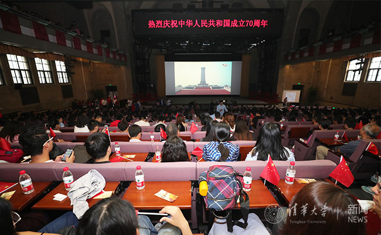
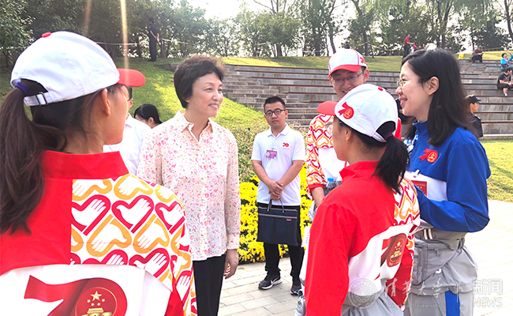
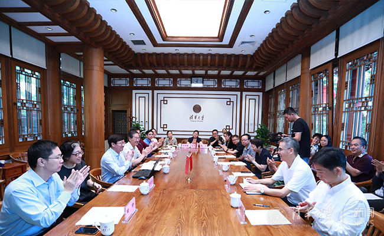
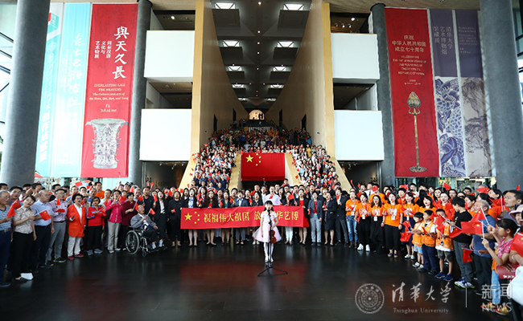

更多 >
-
如果我们是昂扬的，中国就是昂扬的，如果我们是向上的，中国就是向上的。如果我们是青春的，中...
美术学院本科生 万雪鸽 -
时至今日，青年人仍然要担当起时代重责，将个人发展与祖国发展结合起来，正是无数青年的力量汇...
工业工程系本科生 彭硕 -
非常庆幸在清华攻读博士的第五年能有机会走过天安门，和全国人民一同分享伟大祖国的建设成就和...
校研会主席 王展硕 -
红旗如海，欢声如雷，歌声嘹亮；阅兵方阵，铁流滚滚，威武雄壮；游行队伍，载歌载舞，激情奔放...
环境学院教授 张晓健 -
青年强而国强，在这样的时代，我们青年一辈更应该不懈努力，为了祖国的明天而奋斗，不论是各行...
美术学院本科生 邸稷 -
当我望向天安门城楼时，脑海中回忆起的，是开国先烈们为我们今天的美好付出的汗与血；耳旁听到...
工业工程系本科生 王佳琪 -
我们作为未来的文艺创作者，应该承担起社会责任，培养跨学科思维，正确认识历史，认识未来，为...
美术学院本科生 陈晔 -
未来三十年长路漫漫，未来三十年困难重重，我会担负起清华人的责任，为祖国走向现代化贡献出自...
机械系本科生 张和杨
更多 >庆祝活动
-

清华师生集中观看新中国成立70周年庆祝活动
10月1日上午10时，新中国成立70周年庆祝活动在天安门广场隆重举行，中共中央总书记、国家主席、中央军委主席习近平出席并发表重要讲话。清华大学党委书记陈旭、校长邱勇、副校长尤政等清华代表受邀现场观礼。当天上午，校领导王希勤、杨斌、李一兵、郑力、向波涛、彭刚，校务委员会副主任韩景阳...
-

陈旭等看望服务国庆活动清华志愿者
10月2日上午，校党委书记陈旭来到海淀公园和北京展览馆，亲切看望服务于国庆游园活动和“伟大历程 辉煌成就——庆祝中华人民共和国成立70周年大型成就展”活动的170余名清华志愿者。党办主任、校办主任丛振涛，学生部部长白本锋，校团委书记王前等一同前往看望。
-

清华大学举行党外人士庆祝新中国成立70周年座谈会
9月26日上午，清华大学举行党外人士庆祝新中国成立70周年座谈会，座谈会围绕“同心共筑中国梦、携手奋进新时代”主题，共同庆祝新中国成立70周年。校党委常务副书记姜胜耀，校党委常委、组织部部长、统战部部长许庆红出席座谈会。座谈会由统战部常务副部长周明胜主持。
-

艺术博物馆党支部联合举行“祝福伟大祖国，放歌清华艺博”活动
为深入开展“不忘初心、牢记使命”主题教育，并结合庆祝中华人民共和国成立70周年，9月28日上午，艺术博物馆党支部联合自动化系控理党支部、自动化系离退休党支部、化学系分析所党支部、化学系机关党支部、学生社区中心学生公寓区事务科党支部等5个党支部共同举行“祝福伟大祖国，放歌清华艺博”...